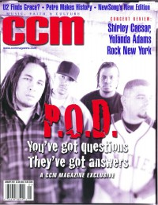
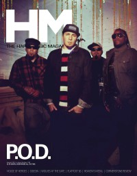

P.O.D.
 November 1999 7ball |
 January 2001 CCM |
 September 2001 HM |
 July 2005 HM |
 January 2006 HM |
 May 2008 HM |
 August 2012 HM |
 15 November 2015 CCM Digital |
Media coverage
- Nov 1996 in HM "P.O.D.", by Doug Van Pelt
- Win 1996 in Garlic Press "Interview: P.O.D."
- May 1997 in HM "Concert Review: Left Out, P.O.D.", by Doug Van Pelt
- Sep 1997 in 7ball "Bankshots: P.O.D.", by Ginny McCabe
- May 1998 in HM "The Lively Hood of POD", by Eric Shirey
- Sep 1998 in HM "Concert Review: The P.O.D. "Evening Encore""
- Sep 1999 in HM "Warriors At Play", by Doug Van Pelt
- Sep 1999 in HM "Concert Review: P.O.D., Blindside, Project 86", by Gordon (a girl called)
- Nov 1999 in 7ball "R.E.S.P.E.C.T.", by David A. Jenison
- Jan 2000 in HM "Poster: P.O.D."
- Jan 2000 in Campus Life "Tell Me About It: Need A Bizkit Alternative?", by Chris Lutes
- Mar 2000 in CCM "Better Than Bizkits", by Lou Carlozo
- Mar 2000 in 7ball "News Item: P.O.D."
- Mar 2000 in 7ball "Channelsurfing", by Kyle Minor
- May 2000 in HM "Concert Review: P.O.D.", by Doug Van Pelt
- Sep 2000 in CCM "In Concert: Pop's, Sauget, IL", by Brian Quincy Newcomb
- Nov 2000 in HM "Concert Review: P.O.D. At Ozzfest 2000", by Doug Van Pelt
- Nov 2000 in HM "Poster: P.O.D."
- Jan 2001 in CCM "When Love Comes to Town", by Gregory J. Rumburg
- Jan 2001 in HM "Fundamentally on the Real", by Treble Bandoppler
- 8 Jan 2001 in Christianity Today "Christianity Today Review: Rock's Real Rebels", by Kevin A. Miller
- May 2001 in Campus Life "On the Front Lines", by Mark Moring
- Sep 2001 in HM "The Prevailing Love", by Chris M. Short
- Oct 2001 in CCM "Music That Matters: P.O.D.", by Mark Moring
- Nov 2001 in CCM "All Access: P.O.D. Launches Satellite Into Orbit", by Brian Quincy Newcomb
- Jan 2002 in HM "Concert Review: Youth of the Nation", by Andrew Hazen
- May 2002 in CCM "fyiNews: Word On The Street", by Marcia Bartenhagen
- 7 Oct 2002 in Christianity Today "Always In Parables: The Future is P.O.D."
- Nov 2002 in New Man "Solid Rock?", by Bob Liparulo
- Nov 2002 in New Man "P.O.D. At Ozzfest: Courageous or Foolish?"
- May 2003 in HM "Hardnews: Loss and New Beginnings"
- Jul 2003 in HM "Hardnews: ...I'd Want It To Be Truby ..."
- Jan 2004 in HM "P.O.D.", by David Allen
- May 2004 in 7ball "Live Music: Nashville, TN, Gaylord Entertainment Center", by Amy E. Hall
- Jul 2004 in HM "Live Report: P.O.D., Blindside, Lacuna Coil & Hazen Street"
- Aug 2004 in CCM "Standing Room Only: Vic Theatre, Chicago, IL", by Andy Argyrakis
- Jul 2005 in HM "Writing The Album of Our Lives", by Adam Robinson
- Jul 2005 in HM "Hard Music History: P.O.D.", by Doug Van Pelt
- Jan 2006 in HM "Dream Is Our Middle Name"
- Jan 2006 in Ignite Your Faith "Time to Testify", by Mark Moring
- Mar 2006 in HM "Live Report: Fall Brawl Tour", by Doug Van Pelt
- Mar 2006 in CCM "Southtown Unbound", by David A. Jenison
- Jun 2006 in Ignite Your Faith "Taking Light Into Dark Places", by Mark Moring
- Jan 2007 in CCM "List-O-Rama: Book 'Em Jimbo: 5 Proofs of the Secret Connection Between Crime Stories and Christian Music", by Chris Well
- Jan 2007 in CCM "The Art of Voting", by Jay Swartzendruber
- Mar 2008 in HM "Poster: P.O.D."
- May 2008 in HM "Reunited and It Feels So Good..."
- Win 2009 in Ignite Your Faith "Entertainment: Music: Dancing Lessons From P.O.D.", by John Brandon
- May 2009 in HM "Classic Moments: P.O.D., Satellite", by Doug Van Pelt
- Jul 2012 in Christianity Today "Two Minutes With...: Sonny Sandoval (P.O.D.)", by Mark Moring
- Aug 2012 in HM "Payable on Death: One Thing Only", by Charlie Steffens
- Oct 2012 in HM "Hardnews: Quick & Concise: P.O.D. joins Derri Daugherty & 3 Doors Down Tour"
- 15 Nov 2015 in CCM Digital "The Cost of the Crusade", by Lena Ziegler
- Oct 2017 in Metalbreed "En Vivo: Nuevamente En Argentina", by Claudia Saavedra
Albums & reviews:
1996: Brown
- Sep 1996 in HM, by Chris Callaway
- Fall 1996 in Garlic Press
- Jul 1997 in 7ball, by Ginny McCabe
- Nov 2000 in HM, by Doug Van Pelt
1999: The Fundamental Elements of Southtown
- Sep 1999 in YouthWorker, by Dave Urbanski
- Sep 1999 in HM, by Doug Van Pelt
- Jan 2000 in 7ball, by Cameron Strang
- Jan 2000 in CCM, by Brian Quincy Newcomb
- 2000 in CCM Brasil, by Brian Quincy Newcomb
- Aug 2000 in Christian Single, by Lou Carlozo
- Spr 2001 in Loud Times
2001: Satellite
- Oct 2001 in CCM, by Dave Urbanski
- Nov 2001 in HM, by Jamie Lee Rake
- Jan 2002 in YouthWorker, by Dave Urbanski
- Jan 2002 in Charisma & Christian Life, by Margret Grady
- Feb 2002 in ThirdWay, by Jason Gardner
- Spr 2002 in Cornerstone, by John J. Thompson
- Nov 2002 in HM, by Doug Van Pelt
- May 2009 in HM, by Doug Van Pelt
- Feb 2012 in HM, by Jamie Lee Rake
2002: Satellite (Limited Edition)
2003: Payable On Death
- Dec 2003 in Nor'Easter, by Chris Gatto
- Dec 2003 in CCM, by David A. Jenison
- Jan 2004 in YouthWorker, by Dave Urbanski
- Jan 2004 in New Man
- Jan 2004 in Prism, by Dwight Ozard
- Jan 2004 in HM, by Christopher Wiitala
- Jan 2004 in Christian Music Planet, by Dave Urbanski
- Jun 2004 in Christian Single, by Andy Argyrakis
2005: The Warriors EP: Vol. 2
2006: Testify
- Jan 2006 in HM, by Kern County Kid
- Jan 2006 in CCM, by Tony Shore
- Jan 2006 in Relevant, by Jonathan P. Walton
- May 2006 in New Man, by Chad Bonham
2008: When Angels And Serpents Dance
- Apr 2008 in CCM, by Doug Van Pelt
- May 2008 in HM, by David Stagg
- Jul 2008 in YouthWorker, by Doug Van Pelt
- Jul 2008 in Worship Leader
- Aug 2008 in Christian Single, by Andy Argyrakis
2018: Circles
2024: Veritas
Award Summary (Nominations / Wins)
Dove Awards- 2000 Dove Awards
- Hard Music Album: The Fundamental Elements of Southtown
- Hard Music Recorded Song: "Southtown"
- Group of the Year
- Artist
- Short Form Music Video: "Rock The Party (Off The Hook)"
- Rock Recorded Song: "Set Your Eyes To Zion"
- Modern Rock/Alternative Recorded Song: "Rock The Party (Off The Hook)"
- Song: "Alive"
- Group of the Year
- Artist
- Song: "Youth Of The Nation"
- Hard Music Recorded Song: "Boom"
- Best Hard Rock Performance: "Youth of the Nation"
- Best Metal Performance: "Portrait"
- 2000 Billboard Music Video Awards
- Best New Artist Clip, Modern Rock: "Rock The Party"
Books about P.O.D.
- "P.O.D. (a.k.a. Payable on Death)" in The Encyclopedia of Contemporary Christian Music (Mark Allan Powell, 2002).
- Chapter also includes: Sonny Sandoval.
- "P.O.D." in The Billboard Guide to Contemporary Christian Music (Barry Alfonso, 2002).
© 2011 CMnexus. Last updated August 2025. Contact: editor -AT- cmnexus -DØT- org